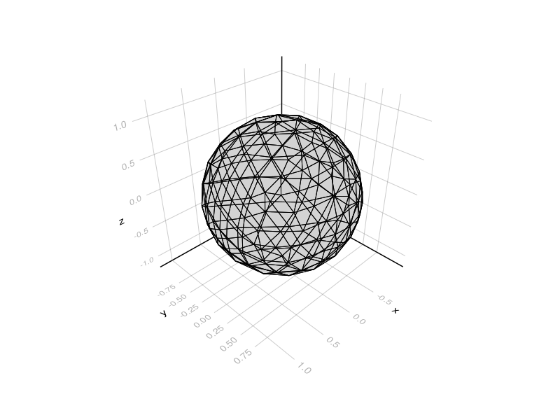
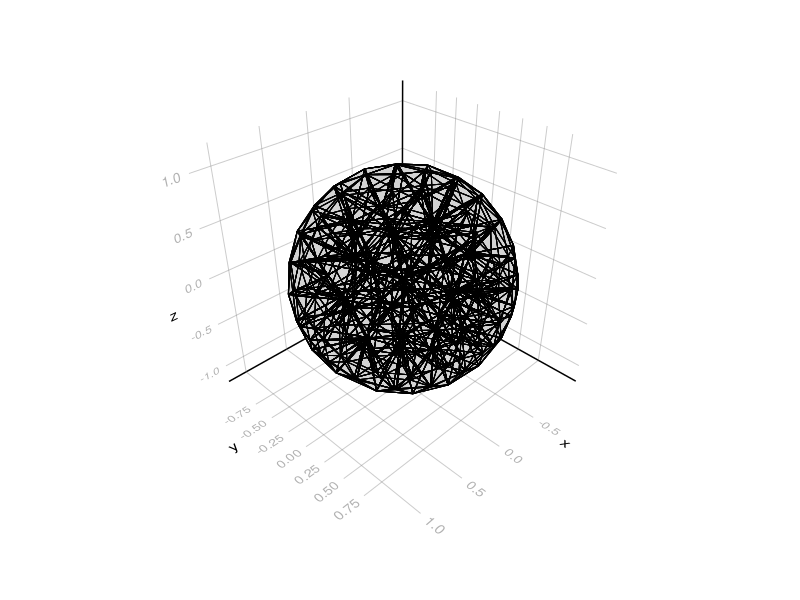
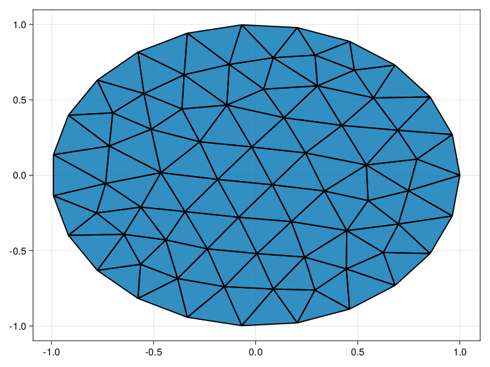

Geometry and meshes
Overview
Gmsh
using Inti
using Gmsh
gmsh_ext = Inti.get_gmsh_extension()
gmsh.initialize()
gmsh.model.add("Sphere")
gmsh.model.occ.addSphere(0,0,0,1)
gmsh.model.occ.synchronize()
gmsh.model.mesh.generate(3)
ents = gmsh.model.getEntities()
Ω = gmsh_ext.import_domain(;dim=3)
msh = gmsh_ext.import_mesh(Ω;dim=3)
gmsh.finalize()Info : Meshing 1D...
Info : [ 40%] Meshing curve 2 (Circle)
Info : Done meshing 1D (Wall 0.000183899s, CPU 0.000181s)
Info : Meshing 2D...
Info : Meshing surface 1 (Sphere, Frontal-Delaunay)
Info : Done meshing 2D (Wall 0.0121862s, CPU 0.01218s)
Info : Meshing 3D...
Info : 3D Meshing 1 volume with 1 connected component
Info : Tetrahedrizing 160 nodes...
Info : Done tetrahedrizing 168 nodes (Wall 0.00216339s, CPU 0.002164s)
Info : Reconstructing mesh...
Info : - Creating surface mesh
Info : - Identifying boundary edges
Info : - Recovering boundary
Info : Done reconstructing mesh (Wall 0.00401418s, CPU 0.004011s)
Info : Found volume 1
Info : It. 0 - 0 nodes created - worst tet radius 3.49551 (nodes removed 0 0)
Info : 3D refinement terminated (204 nodes total):
Info : - 0 Delaunay cavities modified for star shapeness
Info : - 0 nodes could not be inserted
Info : - 698 tetrahedra created in 0.00288538 sec. (241908 tets/s)
Info : Done meshing 3D (Wall 0.0175882s, CPU 0.01364s)
Info : Optimizing mesh...
Info : Optimizing volume 1
Info : Optimization starts (volume = 4.04051) with worst = 0.0215055 / average = 0.737765:
Info : 0.00 < quality < 0.10 : 1 elements
Info : 0.10 < quality < 0.20 : 9 elements
Info : 0.20 < quality < 0.30 : 7 elements
Info : 0.30 < quality < 0.40 : 15 elements
Info : 0.40 < quality < 0.50 : 28 elements
Info : 0.50 < quality < 0.60 : 40 elements
Info : 0.60 < quality < 0.70 : 105 elements
Info : 0.70 < quality < 0.80 : 221 elements
Info : 0.80 < quality < 0.90 : 206 elements
Info : 0.90 < quality < 1.00 : 66 elements
Info : 16 edge swaps, 3 node relocations (volume = 4.04051): worst = 0.306908 / average = 0.754398 (Wall 0.000373798s, CPU 0.000366s)
Info : No ill-shaped tets in the mesh :-)
Info : 0.00 < quality < 0.10 : 0 elements
Info : 0.10 < quality < 0.20 : 0 elements
Info : 0.20 < quality < 0.30 : 0 elements
Info : 0.30 < quality < 0.40 : 15 elements
Info : 0.40 < quality < 0.50 : 28 elements
Info : 0.50 < quality < 0.60 : 34 elements
Info : 0.60 < quality < 0.70 : 106 elements
Info : 0.70 < quality < 0.80 : 219 elements
Info : 0.80 < quality < 0.90 : 209 elements
Info : 0.90 < quality < 1.00 : 72 elements
Info : Done optimizing mesh (Wall 0.000960195s, CPU 0.000939s)
Info : 204 nodes 1011 elements- You can take views of the mesh
mshby passing a domain to theviewfunction - You can plot a
mshif you have aMakiebackend (e.g.GLMakie)
using CairoMakie
Γ = Inti.external_boundary(Ω)
poly(view(msh,Γ);strokewidth=1,color=:lightgray, transparency=true)
You can also plot the volume mesh (see the Documentation of Makie.poly for more details on possible arguments):
poly(view(msh,Ω);strokewidth=1,color=:lightgray, transparency=true)
Two-dimensional meshes are very similar:
using Inti
using Gmsh
using CairoMakie
gmsh_ext = Inti.get_gmsh_extension()
gmsh.initialize()
gmsh.option.setNumber("General.Verbosity", 2)
gmsh.model.add("Disk")
gmsh.model.occ.addDisk(0,0,0,1,1)
gmsh.model.occ.synchronize()
gmsh.model.mesh.generate(2)
Ω = gmsh_ext.import_domain(;dim=2)
msh = gmsh_ext.import_mesh(Ω;dim=2)
gmsh.finalize()
poly(view(msh,Ω);strokewidth=2)